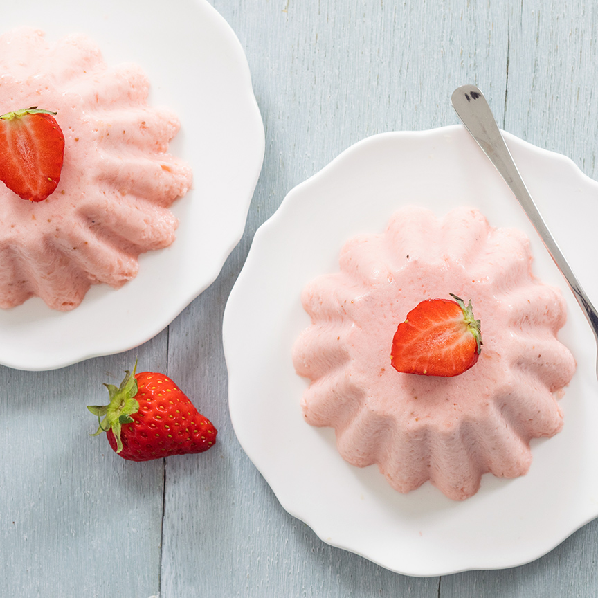

Aardbeien bavarois
De aardbeien bavarois is heerlijk als nagerecht maar is ook goed geschikt voor op een verjaardag om uit te delen.
Ingrediënten
250 gram aardbeien
250 gram slagroom
3 blaadjes gelatine
2 eetlepels citroensap
75 gram suiker
zonnebloemolie om in te vetten
Bereidingswijze
- Week de blaadjes gelatine in koud water.
- Pureer de aardbeien met de staafmixer helemaal fijn. Doe de aardbeiensaus in een pannetje samen met het citroensap en verwarm dit, het hoeft niet te koken.
- Knijp de gelatine uit en voeg het toe aan de warme aardbeiensaus,laat het mengsel vervolgens weer iets afkoelen, niet te ver anders wordt deze al stijf.
- Mix de slagroom en de suiker lobbig. Voeg de aardbeiensaus met de opgeloste gelatine toe en mix het erdoorheen.
- Vet de vormpjes in met een beetje zonnebloemolie, zo laat de bavarois straks beter los, of gebruik siliconen puddingvormpjes.
- Giet het mengsel in de vormpjes en zet minimaal 3 uur in de koelkast, of een hele nacht.
- Doe warm water in een kom en houd de onderkant van de vormpjes kort hierin zodat de aardbeien bavarois makkelijk los komt.
- Stort de bavarois daarna op een bordje. Garneer de bavarois eventueel met wat extra verse aardbeien.

Tip: Wil je geen risico lopen dat de bavarois niet goed uit de vormpjes komt, serveer de aardbeien bavarois dan in een glaasje die je laat opstijven in de koelkast.